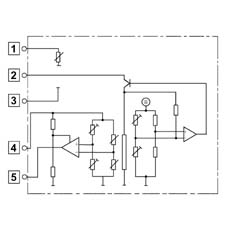
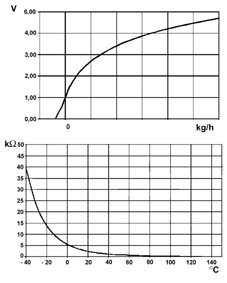
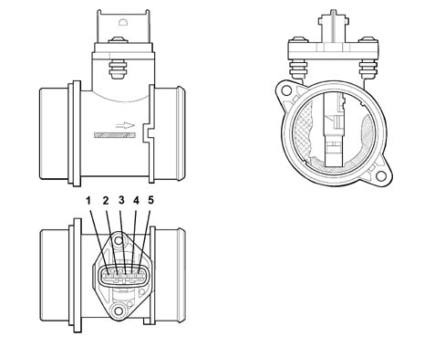

1060GB Check on operation of air flow meter
- Path
- Test > 10 ENGINE UNIT > 1060 DIESEL FUEL INJECTION > 1060G pressure pump electric control > 1060GB Check on operation of air flow meter
- Kind
- test / check procedure
- Applies to
- engines: 1.3 JTD 16v; all production periods
- Interactive page
- https://sloeber94.github.io/elrnDB-fPnd/en/#/2753412
Applies to: engines: 1.3 JTD 16v; all production periods
Check that the air flow meter technical specifications correspond to the data given below:

Applies to: engines: 1.3 JTD 16v; all production periods
Flow meter sensitive element principle diagram

Applies to: engines: 1.3 JTD 16v; all production periods
typical curves [Air flow - Output voltage] and [Temperature - Resistance]

Applies to: engines: 1.3 JTD 16v; all production periods
Pin 1, description: temperature sensor, signal type: analogue output.
Pin 2, description: supply, signal type: 12V supply.
Pin 3, description: earth, signal type: earth
Pin 4, description, reference voltage, signal type: 5V.
Pin 5, description: sensor output, signal type: analogue output.